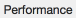
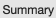

performance_TAB=Pattern().similar(0.75) Summary_TAB=Pattern().similar(0.75) clear_button= stop_button= wait(1) switchApp('Google Chrome.app') if not exists(performance_TAB,3): print 'open devtool on chrome' type('i', KEY_ALT + KEY_CMD ) wait(1) else: print 'devtool already open' print 'switch to Performance TAB' wait(performance_TAB,5) click(performance_TAB) wait(1) print 'start profiling and reload page' type('E', KEY_CMD ) wait(1) waitVanish(stop_button,30) print 'get the summary data' wait(Summary_TAB,5) click(Summary_TAB) click(find(Summary_TAB).below(35)) type("a", KEY_CMD) wait(1) type("c", KEY_CMD) clip = App.getClipboard() clip=clip.encode('ascii', 'ignore') #uprint("clip utf-8:", clip) # a Sikulix Jython feature to print strings containing utf-8 characters print "Performance Summary: ", clip